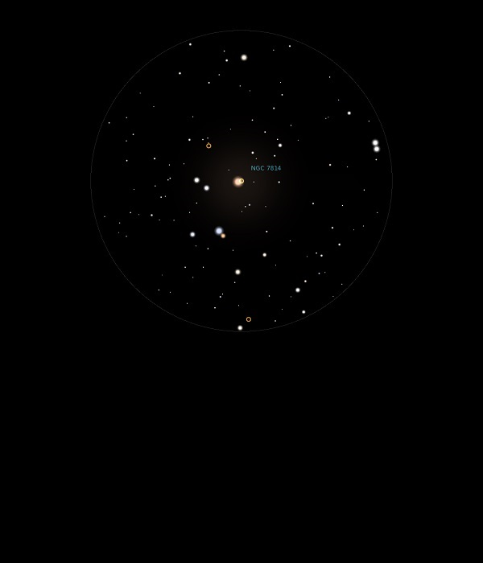

NGC 7814
Spiral Galaxy in Pegasus
NGC 7814
Mag 11.6
The Little Sombrero, Caldwell 43
06/10/13
Faint
but distinct blur in 12mm
However,
where is the Mag 5.9 star adjacent, is it a variable star at
minima?
08/12/14
Just a faint wisp in 12mm, nothing in 25mm but the Moon has
now risen and washed out the sky!